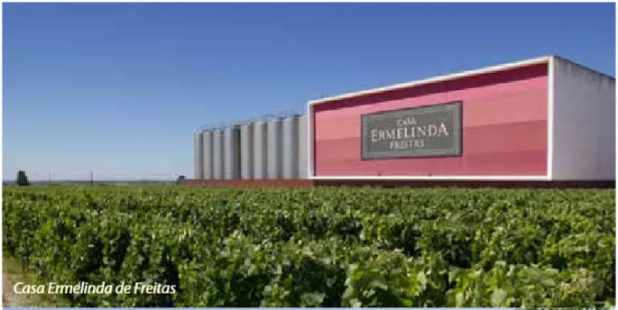
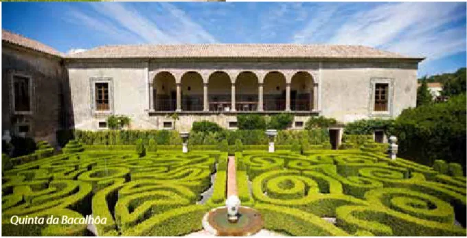

Chapter 4 · The Portuguese wine regions
Península de Setúbal Wine Region
Key figures (2022)
Viticultural area: 8,027 ha
Total Production: 50,004,400 litres
Average yield: 6,200 litres/ha
N.º of Wineries: 379
History
It was the Phoenicians and the Greeks who brought the grapevine varieties to this region from the Near East. Believing the climate amenable and the slopes of the Arrábida as well as the riparian zone of the Tagus to be propitious for the cultivation of the vine, they set to work with their planting. Later, the Romans and the Arabs did much to develop vine cultivation on this peninsula.” Wine exports began at the time of the foundation of the Kingdom of Portugal. At the end of the Middle Ages, royal warrants attested to the King’s interest in this wine. Azóia wine (from a port close to Setúbal) was a very well-known brand on the English market. The Phoenician variety, Moscatel de Kelibia/Alexandria has gained international status under the label Moscatel de Setúbal. Lancers, the first great wine label to be distributed worldwide, has its origins in this region. Situated on the west coast, south of Lisbon, this wine region has a terroir particularly well suited to the production of its famous and much appreciated liqueur wine.
Terroir
Climate Köppen-Geiger classification:
Csa and Csb. Humid temperate climate with a dry season in summer.
MCC System indices (Tonietto & Carbonneau, 2004): The climate of this wine-growing region is determined by the heliothermal index (HI): +1, cool night index (FI): -1, dryness index (DI): +2. The microclimates depend on their location in one of the two orographic and edaphic regions that are subdivided and distinct. Elevation There is a high risk of frost in early


Itinerary 1- Terras de Santiago Itinerary 2- Terras da Arrábida Itinerary 3- Terras verdes Itinerary 4- Tesouro de colonos Itinerary 5- Terras do Sado Itinerary 6- Baía dos golfinhos
Açores Portugal continental
Graciosa
Pico
Terceira
Madeira
Porto Santo Madeira Cabo Espichel
spring, and high humidity with risk of infection with cryptogamic diseases. There exists a risk of sun burn.
Rainfall: 600–800 mm. Relative humidity recorded at 9 a.m. varies between 66 per cent and 86 per cent.
Wind: The intensity of the wind varies between 5 and 8 km/h, with July and August being the windiest months.
Geology:“This region can be divided into two completely distinct orographic zones. The one in the south and southeast is mountainous, formed by the Arrábida, Rosca and S. Luis mountain ranges and by the Palmela, S. Francisco and Azeitão mountains, all of which are interwoven with valleys and hills, at elevations of between 100 and 500 metres. The other; the other, by contrast, is flat, extending over a large plain along the river Sado.” It has a mixed subtropical, Mediterranean climate. Influenced by the proximity of the sea, the river basins of the Tagus (Tejo) and Sado and by the mountain ranges and uplands of the region, the climate has little variation in temperature and annual rainfall of between 400 and 500 mm.”
Vineyard elevation: Between 50 and 500 metres.
Soil science: The soils are podsolgranitic, sandy-clay or sandy-clay loam, calcareous with slight alkalinity, mostly very deep and with low water retention capacity, some of them compact and fertile.
Types of wine produced
DO or IG wines of the region: White, red, rosé, semi-sparkling: sparkling base wine, liqueur wine
Setúbal DO wines: Liqueur, white, red
Palmela DO wines: White, red, rosé, semi-sparkling: sparkling base wine, liqueur wine
Regional contacts
Technical information: Comissão Vitivinícola Regional da Península de Setúbal (Regional Vitivinicultural Commission of Península de Setúbal); Rua Padre Manuel Caetano n.º 26; Tel.: 212 337 100,
Website: www.cvr-psetubal.com Cultural information on the wine of
the region: Confraria dos amigos da Bacalhôa Vinhos Portugal (Confraternity of Friends of Bacalhôa Wines, Portugal),
Website: www.bacalhoa.com; Confraria do Periquita, Website: www.JMF.pt Confraria Moscatel de Setúbal. (Confraternity of Moscatel de Setúbal Society)
Certification authority: Comissão Vitivinícola Regional da Península de Setúbal (Regional Vitivinicultural Commission of the Setúbal Península), Rua Padre Manuel Caetano, 26; 2950-253 PALMELA – Tel.: 212 337 100,
Fax: 212 337 108 –
Website: www.cvr-psetubal.com, e-mail: geral@cvr psetubal.com
Enotourism information: Península de Setúbal Wine Route/Rota dos vinhos da Península de Setúbal, Costa Azul; Casa Mãe da Rota dos Vinhos, Largo de São João, 2950-000 PALMELA,
Tel: 212 334 990;
Website: www.rotavinhospsetubal.com Producer and bottler information http://www.ivv.min-agricultura.pt/ np4/1736.html, Yearbook 2011, pp. 225–226.
Varieties authorised IG Península de Setúbal (regional wine)
Legal basis: Ministerial Order n.º 346/2013 of 27 November and Decree- Law n.º 212/2004 of 3 August
Red wines: Alfrocheiro (Tinta Bastardinha), Alicante Bouschet, Alvarelhão (Brancelho), Alvarelhão Ceitão, Amaral, Amor Não Me Deixes, Amostrinha, Aragonez (Tinta-Roriz, Tempranillo), Aramon, Arinarnoa, Arjunção, Baga, Barreto, Bastardo (Graciosa), Bonvedro, Borraçal, Branjo, Cabernet Franc, Cabernet-Sauvignon, Caladoc, Calrão, Camarate, Carignan, Carmenère, Carrega-Burros, Casculho, Castelã, Castelão (Periquita), Castelino, Casteloa, Cidadelhe, Cidreiro, Cinsault, Concieira, Coração de Galo, Cornifesto, Corropio, Corvo, Cot (Malbec), Doçal, Doce, Donzelinho Tinto, Dornfelder, Engomada, Esgana Cão Tinto, Espadeiro, Espadeiro Mole, Ferral, Galego, Gamay, Gonçalo Pires, Gouveio Preto, Grand-Noir, Granjeal, Grenache, Jaen (Mencia), Labrusco, Lourela, Malandra, Malvarisco, Malvasia Preta, Manteúdo Preto, Marselan, Marufo (Mourisco Roxo), Melhorio, Meira, Merlot, Mondet, Monvedro, Moreto, Moscatel Galego Tinto, Mourisco, Mourisco de Semente, Mourisco de Trevões, Negra Mole, Nevoeira, Padeiro, Parreira Matias, Patorra, Pedral, Pero Pinhão, Petit Bouschet; Petit Verdot, Pexem, Pical (Piquepoul Noir), Pilongo, Pinot Noir, Português Azul (Blauer Portugieser), Preto Cardana, Preto Martinho, Rabo de Anho, Rabo de Lobo, Ramisco, Ricoca, Rodo, Roseira, Rufete (Tinta Pinheira), Sangiovese, Santareno, Sevilhão, Syrah (Shiraz), Tannat, Teinturier, Tinta, Tinta Aguiar, Tinta Aurélio, Tinta Barroca, Tinta Caiada (Pau Ferro, Tinta Lameira), Tinta Carvalha, Tinta de Lisboa (Bastardo Tinto), Tinta Fontes, Tinta Francisca, Tinta Grossa (Carrega Tinto), Tinta Martins, Tinta Mesquita, Tinta Miúda, Tinta Negra (Molar, Saborinho), Tinta Penajoia, Tinta Pereira, Tinta Pomar, Tinta Tabuaço, Tintinha, Tinto Cão, Tinto Sem Nome, Touriga Fêmea, Touriga Franca, Touriga Nacional, Transâncora, Trincadeira (Tinta Amarela, Trincadeira Preta), Valdosa, Varejoa, Verdelho Tinto, Verdial Tinto, Vinhão (Sousão), Xara, Zé do Telheiro, Zinfandel, Gewürztraminer and Moscatel Galego Roxo.
White wines: Alicante Branco, Almafra, Almenhaca, Alvadurão, Alvar, Alvarinho, Antão Vaz, Arinto (Pedernã), Arinto do Interior, Arinto dos Açores (Terrantez da Terceira), Arnsburger, Avesso, Azal, Barcelo, Bastardo Branco, Batoca (Alvaraça), Beba, Bical (Borrado das Moscas), Boal Barreiro, Boal Branco, Boal Espinho, Branco Desconhecido, Branco Especial, Branco Gouvães (Alvarelhão Branco), Branco Guimarães, Branco João, Branda, Cainho, Caracol, Caramela, Carrasquenho, Carrega Branco, Cascal, Castelão Branco, Castelo Branco, Cerceal Branco, Cercial, Chardonnay, Chasselas, Chasselas Cioutat (Chasselas Salsa), Chasselas Sabor, Chenin, Códega do Larinho, Colombard (Semilão), Cornichon, Corval, Crato Espanhol, Dedo de Dama, Diagalves, Dona Joaquina, Donzelinho Branco, Dorinto, Encruzado, Esganinho, Esganoso, Estreito Macio, Fernão Pires (Maria Gomes), Folgasão, Folha de Figueira (Dona Branca), Fonte Cal, Galego Dourado, Gouveio, Gouveio Estimado, Gouveio Real, Granho, Greco (Greco di Tufo), Grüner Veltliner, Jacquère, Jampal, Lameiro, Larião, Leira, Loureiro, Luzidio, Malvasia, Malvasia Bianca, Malvasia Branca, Malvasia Cândida, Malvasia de São Jorge, Malvasia Fina, Malvasia Parda (Farinheira), Malvasia Rei, Malvasia Romana, Manteúdo, Moscadet, Moscatel Graúdo, Moscatel Nunes, Mourisco Branco, Müller Thurgau, Pé Comprido, Perigó, Perrum, Pinot Blanc, Pintosa, Praça, Promissão, Rabigato, Rabigato Franco, Rabigato Moreno, Rabo de Ovelha, Ratinho, Riesling, Roupeiro Branco, Samarrinho (Budelho), Santoal, São Mamede, Sarigo, Sauvignon (Sauvignon Blanc), Semillon, Sercial (Esgana Cão), Síria (Roupeiro, Códega), Tália (Ugni Blanc, Trebbiano Toscano), Tamarez (Molinha), Terrantez, Terrantez do Pico, Trajadura (Treixadura), Trincadeira Branca, Trincadeira das Pratas, Uva Cão, Uva Cavaco, Valveirinho, Vencedor, Verdejo, Verdelho, Verdial Branco, Viognier, Viosinho and Vital.



Prestigious wineries
in the region: Cooperativa Agrícola de Santo Isidro de Pegões
The cooperative produces wine from the grape harvests totalling an average 11,000,000 kg annually from a viticultural area covering 1,117 hectares.
Casa Ermelinda Freitas
This family business which has been led by generations of competent women manages 550 hectares of vineyards, bottling more than 15 million litres of wine annually which is distributed to roughly 30 markets across the world. José Maria de Fonseca Vinhos S.A. A family-run business with almost two centuries of winemaking history employs the most advanced winemaking techniques and manages several estates whose vineyards together cover almost 650 hectares. The winery is one of the most advanced in Europe with a capacity to vinify 6.5 million litres of wine at any one time. Bacalhôa Vinhos de Portugal This is the wine group of businessman Joe Berardo, and Bacalhôa Vinhos de Portugal owns wineries in the most important of Portugal’s wine regions, namely Douro, Dão, Bairrada, Península de Setúbal (Azeitão), Lisboa and Alentejo.
With a total capacity of 20 million litres, 15,000 oak barrels and roughly 1,000 hectares of productive vineyards, Bacalhôa Vinhos de Portugal continues in its commitment to innovation in the sector. Quinta do Piloto
Venâncio da Costa Lima – Palmela Adega de Palmela
Filipe Palhoça Vinhos – Palmela
Quinta do Alcube, Adegas Fernão Pó Adega Winery